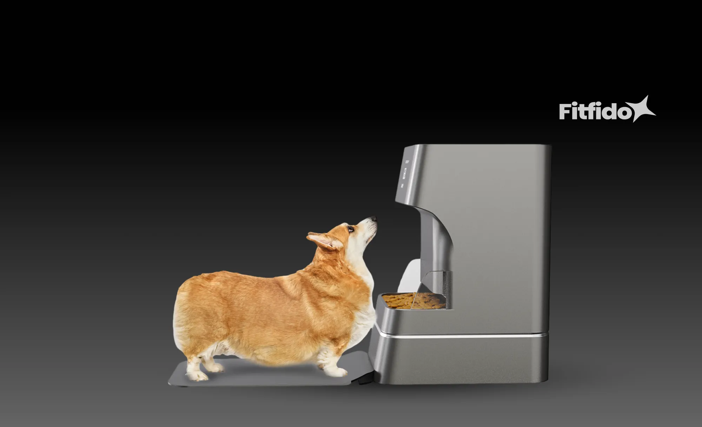
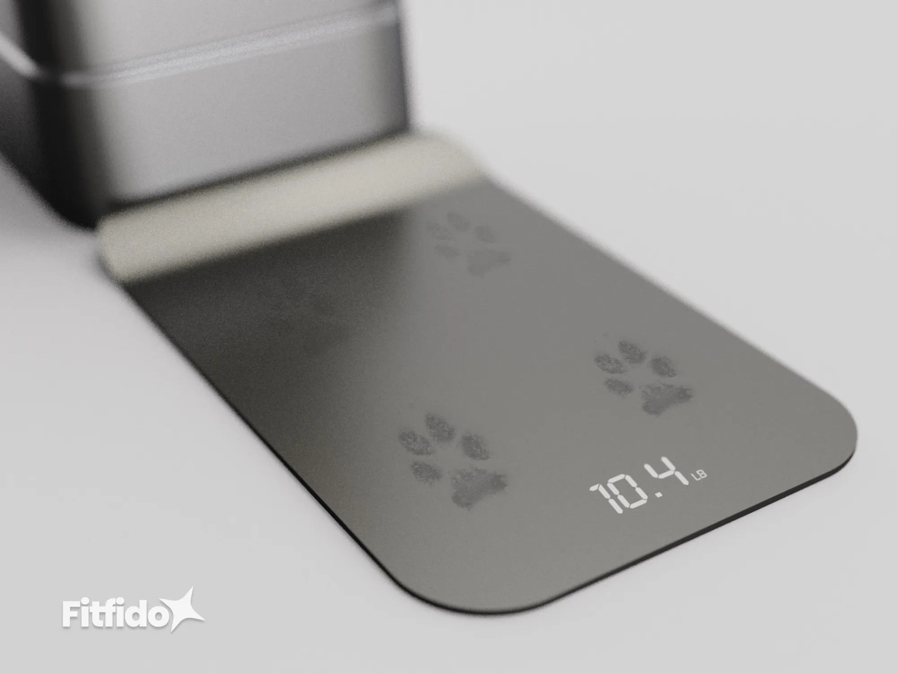
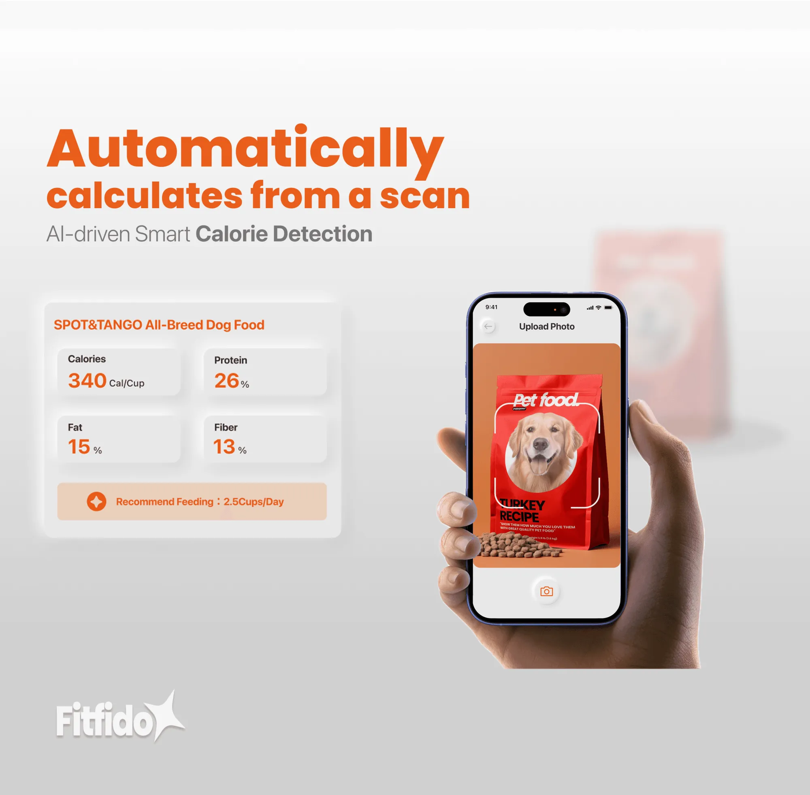
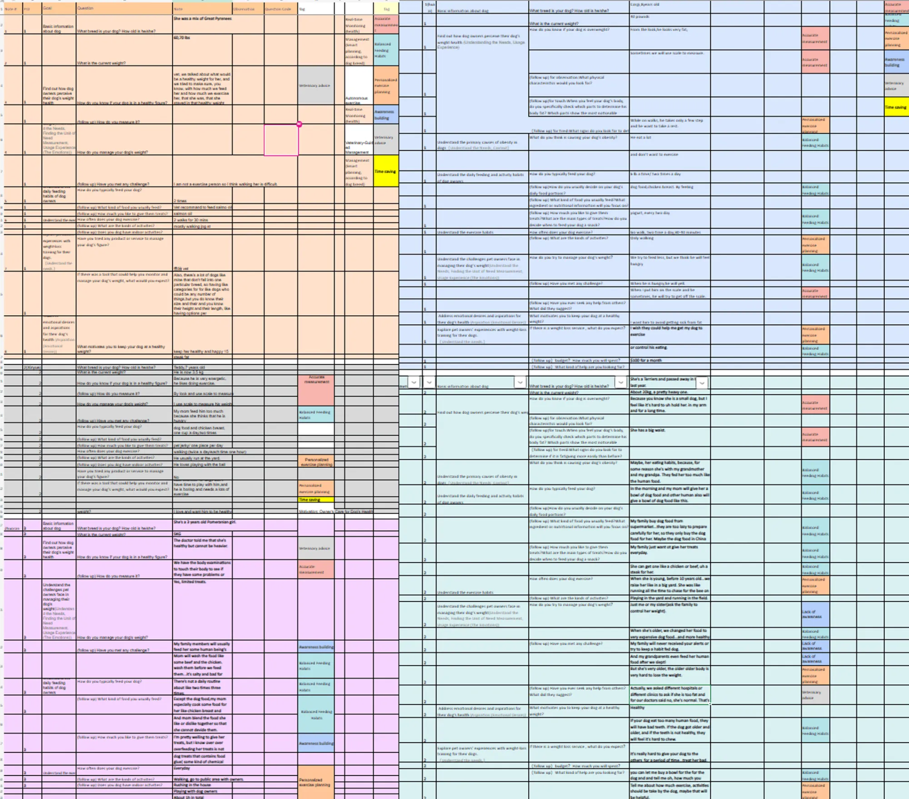
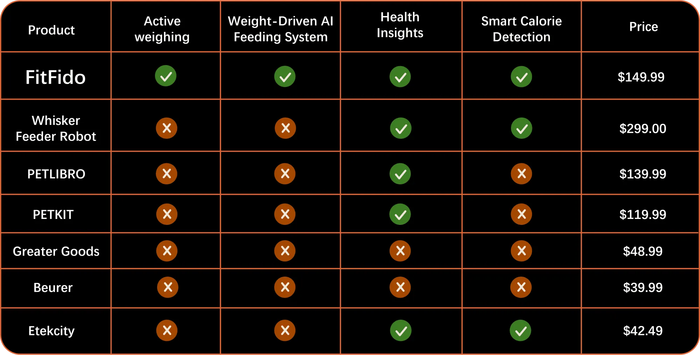
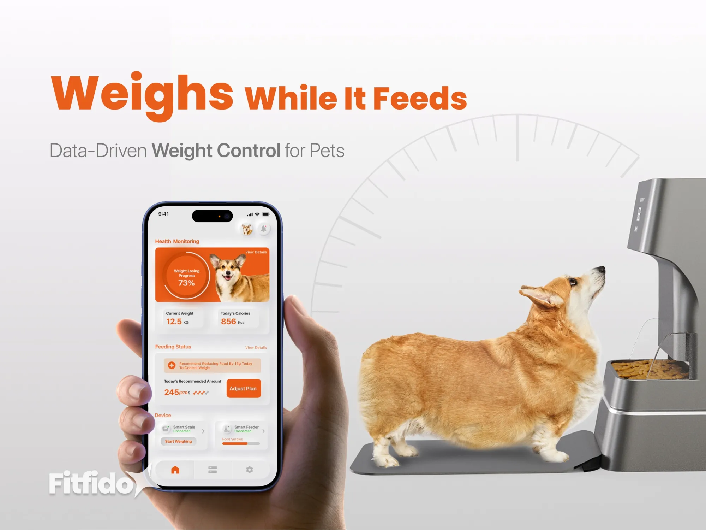
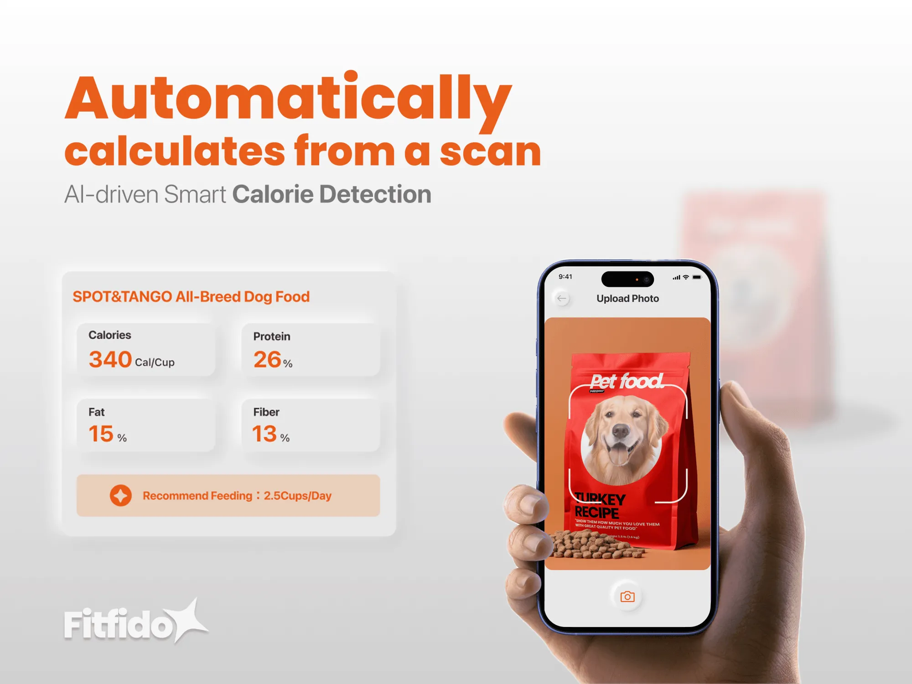
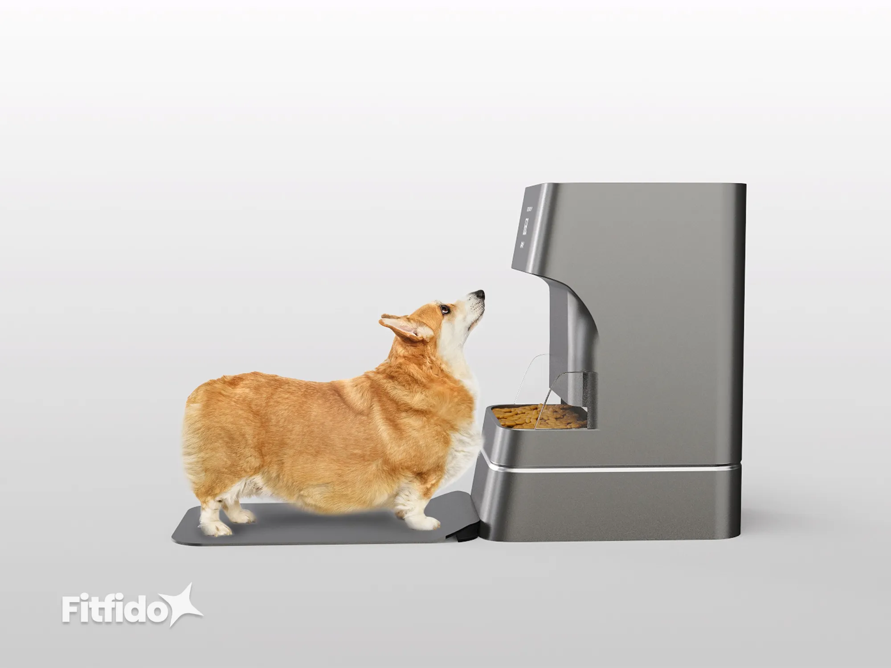

High prevalence
Most dogs are overweight.
Weight issues are no longer isolated cases but a widespread health concern.
59%
of dogs are overweight or obese
A smart feeder that weighs your dog at every meal.
SCROLL
A smart feeder that weighs your dog at every meal — so weight management happens without extra effort.



I reframed the project from a list of features into one research-driven system, connecting feeding, weighing and calorie tracking in a single feedback loop.
59% of dogs are overweight. Most owners never notice.
Pet obesity is common, under-noticed and hard to fix.
Weight issues are no longer isolated cases but a widespread health concern.
of dogs are overweight or obese
The gap between actual weight and owner awareness means many cases go unrecognized.
of owners think their dog is overweight
Even when owners act, results are inconsistent or short-lived.
Excess weight shortens lifespan and raises the risk of chronic illness.
Pet obesity management and pet tech are both expanding fast.
Problem statementPet weight management lacks an integrated, sustainable system for consistent, long-term health tracking.
Weight control depends on manual effort and routine.
We interviewed 11 dog owners — of overweight, previously overweight and healthy-weight dogs — about feeding habits, portion control and health tracking.

02 What owners told us
Finding 01 / 04Finding 02 / 04Finding 03 / 04Finding 04 / 04
Portions are estimated, not measured.
Weight tracking is inconsistent and rarely sustained.
Owners feel unsure about their food choices.
Health data is fragmented and hard to read over time.
Put the scale inside the routine.
Embedding weighing into feeding removes the separate tracking step, so data is collected every meal without extra effort.
Competitors only solve part of it.

Every meal becomes a health check.

04 Key features
01 · Smart Scale02 · AI Diet Impact03 · Weight Goal04 · Food Scan
A built-in scale weighs your dog at every meal. No separate weigh-ins, no guesswork.
Portions adjust to weight trends. To keep Mercy on track, the app trims tonight’s dinner from 150 g to 135 g.
Every meal becomes a data point. Weight, calories and goals turn into clear progress in the app.
Scan a treat or a bag of food and Fitfido counts the calories, so portions stay accurate.
The app went through two rounds. Try both.
Everything that looks tappable works, and both scroll like the real app. Notes follow along, and in the second one each change appears when you reach it.
Keep scrolling
Before First prototype
After Second iteration



DRAG TO EXPLORE · CLICK TO ENLARGE
Next project
Brilliant.org
View case study